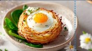
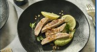

Entrée

Fromage de chèvre du Sud-Ouest, avec sa croûte fine et sa pâte crémeuse, adore les rencontres un peu inattendues.
Nid de Paques

Un œuf cuit en cocotte dans une crème onctueuse, parfumée de morilles sautées et d’asperges tendres.
Oeuf cocotte

Tataki de veau, sauce wasabi et avocat Veau juste saisi, tranché finement, servi avec une sauce wasabi douce et de l’avocat fondant.
tataki de veau

Focaccia pommes de terre et romarin Focaccia moelleuse garnie de pommes de terre fines et parfumée au romarin.
focaccia

Mini tacos de sarrasin, avocat et saumon Petits tacos de sarrasin garnis d’avocat crémeux et de saumon frais.
Mini tacos